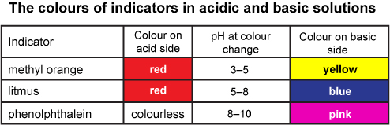

AIM: To carry the reaction of zinc with Dilute Sulphuric acid and classify it as a physical or chemical change.
MATERIALS REQUIRED: Boiling test tube/beaker/ beaker, Dilute Sulphuric acid, Zinc Dust, Spatula, Match box, dropper.
PROCEDURE:
• Add few drops of Dilute Sulphuric acid using a dropper in a boiling test
tube/beaker/beaker.
• Using a spatula add some zinc dust into the boiling tube/beaker.
• In this reaction you will observe that zinc reacts with acid and releases
a gas.
• Take the test tube/beaker and light a matchstick and introduce it into
the gas near the mouth of the test tube/beaker.
OBSERVATION:
• We observe that the matchstick burns with a pop sound when brought
near the open end of the test tube/beaker.
•The pop sound is a clear indication that the gas evolved is hydrogen.
• When a metal reacts with an acid Hydrogen gas is released.
• If we take the red and blue litmus paper and hold it over the mouth of
the test tube/beaker when the gas is released there will no change in
the color of the papers.
INFERENCE:
• In this reaction zinc reacts with Dilute Sulphuric acid to form an
aqueous solution of zinc sulphate and Hydrogen gas evolves.
• Zn(s) + H2SO4(aq) → ZnSO4(aq) + H2(g)↑
• The chemical composition is different from the reactants. Hence, it is
a chemical change.
PRECAUTIONS:
• Always wear safety gloves while handling chemicals.
• Acids and chemicals must be handled carefully under the
assistance of a teacher.
• Keep the mouth of the test tube/beaker away from your face.
ADDITIONAL INFORMATION:

REFERENCES AND YOUTUBE LINK:
• https://youtu.be/n8mnZxLETsg
• https://youtu.be/9hBCLoWwcWo